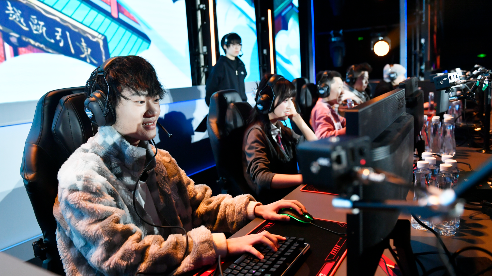
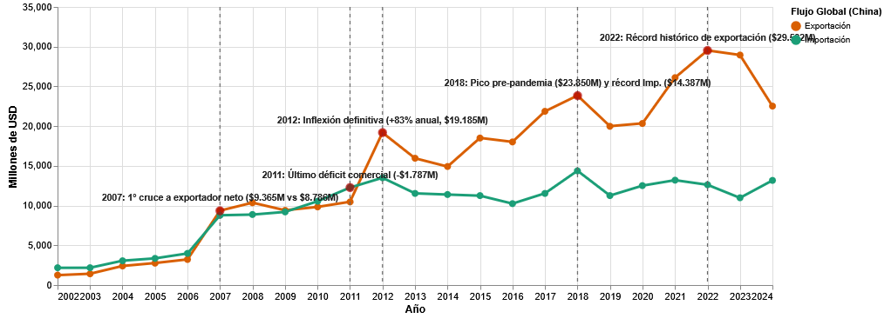

Históricamente, desde los inicios de la industria de los videojuegos, el mercado siempre había estado dominado por los Estados Unidos y Japón desde 1972, año en que se lanzó Computer Space, considerado el primer juego de arcade comercial. Washington y Tokio no solo exportaban juegos, exportaban cultura.
Estados Unidos no solo inventó la industria; exportó su estilo de vida. Al estar la inmensa mayoría (si no todas) las principales desarrolladoras en ese país, es inevitable observar como elementos de la cultura estadounidense se fusionaban con la jugabilidad. El héroe solitario, la expresibidad hollywoodense,capitalismo, armas y rock.
A la par que Estados Unidos dominaba el mercado doméstico, Japón no se quedaba atrás. Desde la llegada de las primeras máquinas arcade en 1973, empresas como Taito, Sega, Namco y Nintendo comenzaban a labrar su nombre en la industria. A paso lento pero constante, bajo la mentalidad del Kaizen (改善), la "mejora continúa japonesa", los nipones comenzaban a hacerse un nombre.
A comienzos de los años 80 ocurrió uno de los eventos que marcó para siempre a la industria de los videojuegos; el llamado "Crack del 83".
El mercado estadounidense, en ese momento el más grande del planeta, se inundó de consolas y videojuegos de baja calidad, detonando una falta de confianza en los consumidores. Ya calidad pasó a un segundo plato. Solo importaba vender más, cueste lo que cueste.
Según reporta el medio Xataka, la pérdida estimada del valor del mercado pasó de 3000 millones de dólares a menos de 100 millones. La catástrofe llegó a tal nivel que, con el fin de seguir evitando más pérdidas, muchas compañías se desacían de los videojuegos dustruyéndolos o enterrándolos en el suelo. Era mucho más barato que tenerlos en las bodegas.
La imagen muestra varios juegos pertenecientes a la Atari 2600. Muchos de ellos, especialmente los del videojuego "E.T. the Extra-Terrestrial", del que varias copias fueron enterradas en el desierto del estado de Nuevo México, en Estados Unidos.
Mientras el mercado estadounidense moría el rescate llegó desde Asia. En 1983, la compañia japonesa Nintendo lanzó una de las consolas más importantes de la historia, precisamente por lo que significó en términos de calidad: la Family Computer, conocida en occidente como Nintendo Entertainment System (NES). Un éxito rotundo que llenó el mercado con videojuegos de gran calidad, liderados por Super Mario Bros.
Sin embargo, el boom del "país del sol naciente" no vino solo de la mano de los videojuegos. Los 80 y los 90 significaron una entrada por la puerta grande de toda la cultura japonesa a Occidente
Desde que China decidió abrirse económicamente al mundo bajo el liderazgo del presidente Deng Xiaoping y su política de la "reforma y apertura" (Gaige Kaifang) el país asiático ha experimentado un crecimiento astronómico.
La industria tecnológica de Beijing sufrió una transformación importante. En pocos años, pequeños pueblos se transformaron en metrópolis. China pasó de ser principalmente un país exportador de industria ligera, a ser uno de los centros mundiales más importantes de fabricación de hardware y software.
El siguiente gráfico, construido en base a los datos públicos entregados por la United Nations Trade and Development Data Hub, entrega un panorama general del desarrollo económico de importaciones y exportaciones de productos culturales de China, Estados Unidos, Corea, Japón, la Unión Europea y Reino Unido.

Este gráfico muestra el flujo de importaciones y exportaciones de productos culturales en el mercado de China
Basándonos en los datos entreganos por la United Nations Trade and Development Data Hub citados anteriormente, es posible apreciar dos momentos importantes en la historia comercial de productos culturales en China. El primero es el año 2012, que representa el punto en el cual las exportaciones de productos culturales chinos (específicamente aquellos catalogados como software, videojuegos y otros) superaron al de las importaciones. El segundo, es el año 2022, que representa, según los datos de la ONU, el año de mayor flujo exportador de estos bienes para el país asiático.
El año 2012 representa la inflexión definitiva en el flujo comercial de China. En ese año, las exportaciones de software y videojuegos superaron en un 83% a las importaciones, con un total de 19.185 millones de dólares en total. El dragón había despertado.
¿Pero qué pasó exactamente ese año para que existiera un salto tan grande como ese? Las razones son múltiples.
Ese año se dio el despliegue internacional definitivo de Tencent, la que hoy es considerada la mayor empresa de videojuegos del planeta, más grande que cualquier otra empresa occidental. En 2012 Tencent realizó un movimiento clave; adquirió el 40% de Epic Games, empresa estadounidense dueña de videojuegos como Fortnite y de Unreal Engine, uno de los motores de desarrollo más poderosos y usados del mundo.
No solo fue Epic Games. Ese año, Tencent realizó la adquisición más importante del mundo del gaming: la compra de Riot Games, desarrolladora dueña del videojuego que más dinero mueve del mundo, League of Legends.
La imagen muestra a algunos de los personajes del videojuego League of Legends, uno de los productos que más dinero genera anualmente dentro de la industria
Lo interesante es que esta enorme expansión del mercado se dio inclusive cuando las consolas de videojuegos continuaban estando totalmente prohibidas en China, prohibición que fue levantada en el año 2014, 14 años después de su implementación. Esta restricción, sin embargo, había logrado reforzar paralelamente la escena del gaming en PC.
2012 fue también un año clave para el gaming móvil. Aun en pañales, el sector de los videojuegos para celulares representaba ya un 5.4% del sector, liderado por éxitos internos como lo eran Dragon Force. Este punto es clave, ya que el desarrollo temprano de experiencias para celulares permitió cimentar las bases del know-how de las desarrolladoras chinas que, en un futuro, liderarían el mercado con videojuegos gacha como Genshin Impact.